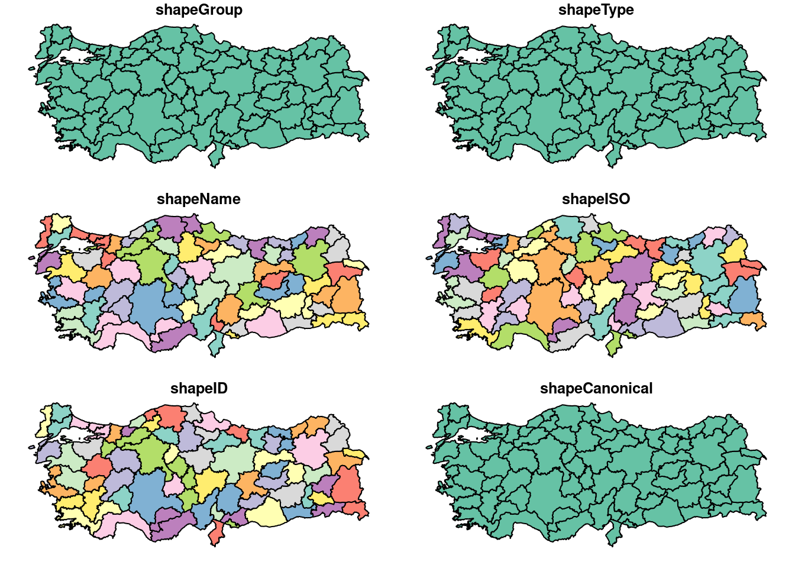
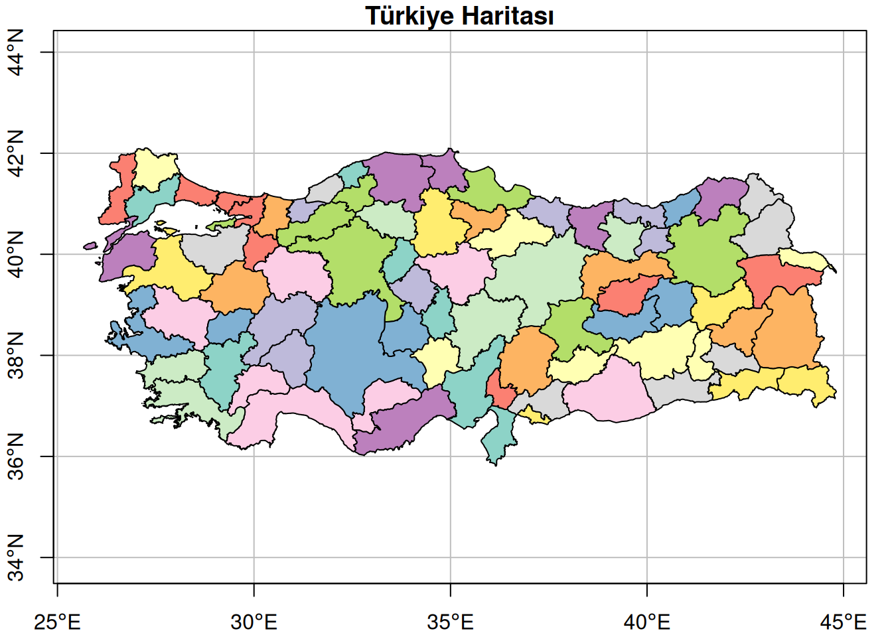
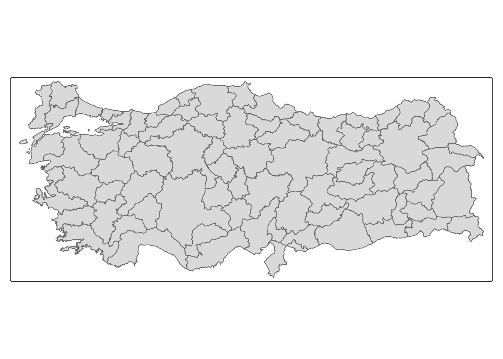
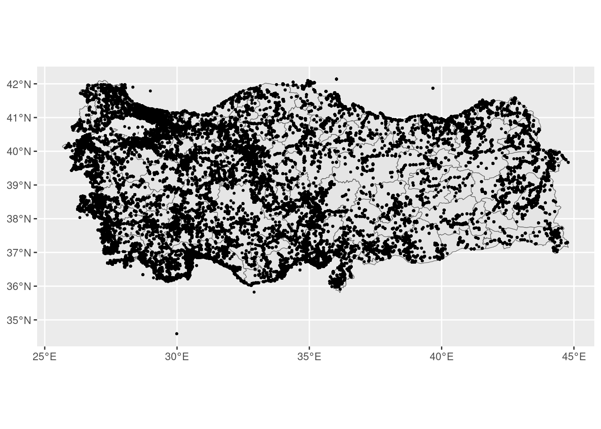
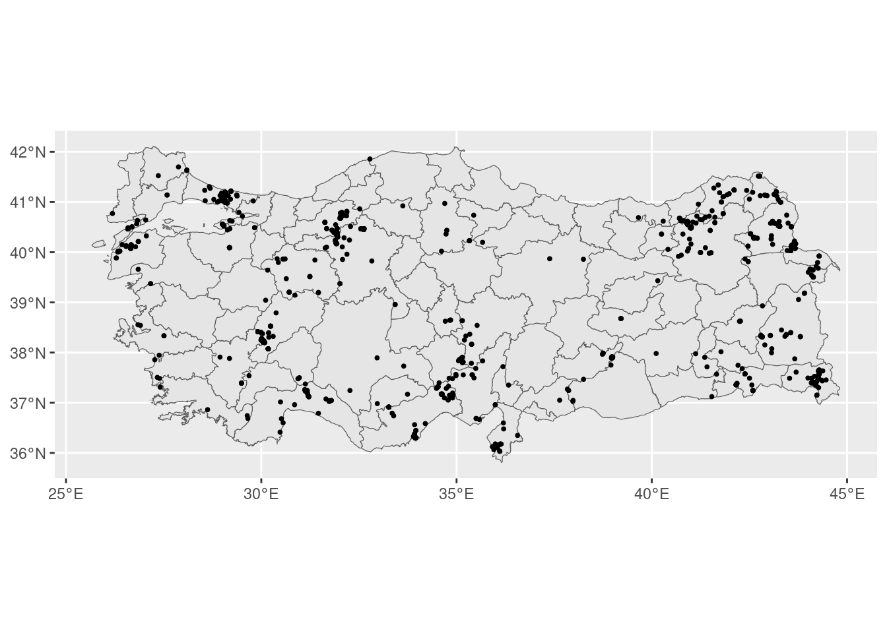
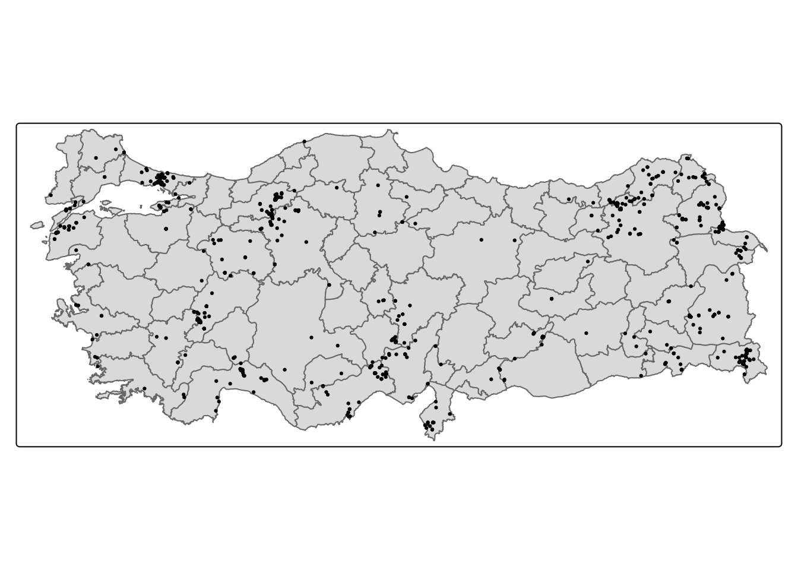
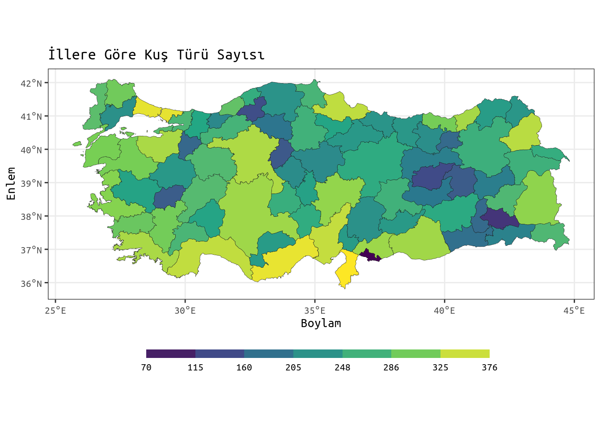

| Paket | Açıklama |
|---|---|
| tidyverse | Çoğunlukla veri manipülasyonu ve görselleştirme üzerine paketler içeren bir paket koleksiyonu |
| sf | Simple Features: Mekânsal vektör verileri işlemek için |
| rgeoboundaries | Mülki idare sınırlarını indirmek için |
| tmap | Güzel haritalar çizmek için |
R ve Kuşlar - Ebird Verilerinin R ile Analizi I
Merhabalar, blogun ilk yazısına hoş geldiniz. Temel bilgiler içeren yazılar da olacak ancak blog içeriklerinin büyük çoğunluğunun bu gibi vaka örneklerinden oluşacağını düşünüyorum. Takıldığınız ve anlamadığınız yerler olursa lütfen yorum yapmaya çekinmeyiniz. Ayrıca katkılarınızı ve eleştirilerinizi de bekliyorum. Keyifli okumalar.
İlk blog yazısıyla alakalı aklımda benzer bir plan vardı ancak geçtiğimiz haftalarda (yazıyı yazmamın üstünden aylar geçti :) ), yüksek lisansımı yaptığım labdaki sunumumun ardından, bu yazıyı yazmaya karar verdim. Bu blog yazısında, özetle, R’da kuş verilerini nasıl işleyeceğimize değineceğim. Kuşlara doğrudan ilginiz olmasa dahi, temel bazı mekânsal analizleri öğrenmek için faydalı bir yazı olacak.
Burada iki temel sorumuz var:
- Türkiye’de, illere göre toplam kuş türü sayısı nasıl bir dağılım gösteriyor?
- Bilindiği gibi Kızılcahamam, Türkiye’deki en önemli kara akbaba - Aegypius monachus popülasyonlarından birisini barındırıyor. Bu türün, Kızılcahamam ilçe sınırları içerisinde nasıl bir dağılımı vardır? Türün dağılımıyla çevresel faktörler arasındaki ilişki kabaca nasıldır?
Bu yazıda yalnızca birinci soruya odaklanacağız. İkinci soru için ikinci yazıyı bekleyiniz lütfen. :)
1. Türkiye’de, illere göre toplam kuş türü sayısı nasıl bir dağılım gösteriyor?
Bu soruya cevap verebilmek için öncelikle iki temel veriye ihtiyacımız var. Bunlardan birisi kuş, diğeri ise Türkiye’deki iller. Eğer elimizdeki kuş verisinde her bir tür için kaydedildiği il bilgisi varsa, illere göre kuş türlerini gruplayıp, kuş türü sayısını bulacak şekilde özetleyebiliriz. Bu, aşina olanlar için, Excel’deki pivot table’a benziyor. Ancak bu yöntemle mekânsal bir veri elde edemeyiz. Bu işlemin ardından kuş verisinin, Türkiye illeri katmanına, il isimlerine göre bağlanması gerekir. Hâlihazırda kuşların kaydedildiği noktaların koordinatları olduğundan, mekânsal olarak işleyeceğiz. Zaten koordinata göre toplanan verilerin mekansâl olarak işlenmesi daha güvenli.
Yazının Akışı
Yazının genel akışı aşağıdaki gibidir:
- Gerekli paketlerin yüklenmesi
- Kuş verisinin yüklenip bu yazı için gerekli olan alt kümesinin alınması
- Kuş verisinin mekânsallıştırılması
- TR il katmanının yüklenmesi
- Kuş verisinin gruplanıp özetlenmesi
- Her bir il sınırı içinde kalan tür sayısının hesaplanması
- Verinin görselleştirilmesi
1. Gerekli paketlerin yüklenmesi
Eğer bu paketler kurulu değilse aşağıdaki kod bloğu ile kurabilirsiniz. Bu kod bloğu, paketi R’a yüklemeye çalışacak, eğer yükleyemezse kuracaktır. Eğer kurulumda sıkıntı yaşarsanız paketlerin dökümantasyonuna bakabilirsiniz.
if (!require("tidyverse")) install.packages("tidyverse")
if (!require("sf")) install.packages("sf")
if (!require("rgeoboundaries")) install.packages("rgeoboundaries")
if (!require("tmap")) install.packages("tmap")Eğer paketler kuruluysa library() fonksiyonu ile yükleyebiliriz.
library(tidyverse) # bircok veri isini kolaylastirmak icin
library(sf) # r'da mekansal vektor verileri islemek icin
library(rgeoboundaries) # tr il sinirlarina erismek icin
library(tmap) # guzel haritalar cizmek icin Kuş verisi olarak, Türkiye ve dünyadaki en kapsamlı kuş gözlem veri tabanı olan eBird’ü kullanacağız. eBird, dünyadaki en büyük kuş veri tabanı. Kuş gözlemcileri araziye çıktıklarında gözlemledikleri kuşları bu veri tabanına kaydediyor, bilime ve doğa korumaya katkı sağlayabiliyorlar. 2015 yılında ulusal veri tabanımız Kuşbank’ın eBird’e taşınmasından beri Türkiye kuşlarını konu alan en kapsamlı veri tabanı aynı zamanda.
eBird verilerini siteye üye olup, en altta, Bilim başlığı altındaki Veri indirme talebi sayfasından ya da {rebird} paketini kullanarak indirebilirsiniz. Ben, site üzerinden tüm Türkiye verilerini talep ederek indirdim.
2. Kuş verisinin yüklenip bu yazı için gerekli olan alt kümesinin alınması
İndirdiğimiz eBird verilerini R’a yükleyelim. eBird verileri txt dosyası olduğundan {tidyverse} paket evreni içindeki bir fonksiyon olan read_delim()’i kullandık. Base R’daki read.table() fonksiyonu da kullanılabilir. Veri biraz büyük olduğundan yüklenmesi ve işlenmesi yavaş olabilir.
ebird <- read_delim("./ebird/ebd_TR_relApr-2023.txt")print(ebird)# A tibble: 2,403,720 × 50
`GLOBAL UNIQUE IDENTIFIER` `LAST EDITED DATE` `TAXONOMIC ORDER` CATEGORY
<chr> <dttm> <dbl> <chr>
1 URN:CornellLabOfOrnithology:E… 2021-04-15 12:59:44 10043 species
2 URN:CornellLabOfOrnithology:E… 2021-04-15 12:58:56 5625 species
3 URN:CornellLabOfOrnithology:E… 2021-04-15 13:04:32 1361 species
4 URN:CornellLabOfOrnithology:E… 2021-04-14 00:03:13 22215 species
5 URN:CornellLabOfOrnithology:E… 2021-04-05 11:01:32 5787 species
6 URN:CornellLabOfOrnithology:E… 2021-04-21 02:26:13 29239 species
7 URN:CornellLabOfOrnithology:E… 2021-04-14 00:03:35 22156 species
8 URN:CornellLabOfOrnithology:E… 2021-04-05 11:01:32 291 species
9 URN:CornellLabOfOrnithology:E… 2018-09-20 02:46:53 5945 species
10 URN:CornellLabOfOrnithology:E… 2018-09-20 02:46:53 5945 species
# ℹ 2,403,710 more rows
# ℹ 46 more variables: `TAXON CONCEPT ID` <chr>, `COMMON NAME` <chr>,
# `SCIENTIFIC NAME` <chr>, `SUBSPECIES COMMON NAME` <chr>,
# `SUBSPECIES SCIENTIFIC NAME` <chr>, `EXOTIC CODE` <chr>,
# `OBSERVATION COUNT` <chr>, `BREEDING CODE` <chr>,
# `BREEDING CATEGORY` <chr>, `BEHAVIOR CODE` <chr>, `AGE/SEX` <chr>,
# COUNTRY <chr>, `COUNTRY CODE` <chr>, STATE <chr>, `STATE CODE` <chr>, …print() fonksiyonu ile verinin genel yapısını gördük. 2,403,720 gözlem (satır) ve 50 değişkene (sütun) sahip bir tibble ({tidyverse}’e özel bir data frame şekli, bence daha kullanışlı). Değişken sayısı fazla olduğu için print() fonksiyonu yeterince kullanışlı. Bu sebeple, R’a yüklediğimiz eBird veri tablosunun tüm sütunlarını ve onların yapılarını görmek için glimpse() fonksiyonunu kullanacağız. Bu fonksiyon, base R’daki str() fonksiyonuna benziyor ancak tibble veri yapısıyla kullanılırken daha sade ve kullanışlı bence. Özetle, bu fonksiyonu, print() fonksiyonunun transpoze edilmiş hâli olarak görebilirsiniz.
glimpse(ebird)Rows: 2,403,720
Columns: 50
$ `GLOBAL UNIQUE IDENTIFIER` <chr> "URN:CornellLabOfOrnithology:EBIRD:OBS112…
$ `LAST EDITED DATE` <dttm> 2021-04-15 12:59:44, 2021-04-15 12:58:56…
$ `TAXONOMIC ORDER` <dbl> 10043, 5625, 1361, 22215, 5787, 29239, 22…
$ CATEGORY <chr> "species", "species", "species", "species…
$ `TAXON CONCEPT ID` <chr> "avibase-4F404CB9", "avibase-77845DAD", "…
$ `COMMON NAME` <chr> "Indian Roller", "Siberian Crane", "Black…
$ `SCIENTIFIC NAME` <chr> "Coracias benghalensis", "Leucogeranus le…
$ `SUBSPECIES COMMON NAME` <chr> NA, NA, NA, NA, NA, NA, NA, NA, NA, NA, N…
$ `SUBSPECIES SCIENTIFIC NAME` <chr> NA, NA, NA, NA, NA, NA, NA, NA, NA, NA, N…
$ `EXOTIC CODE` <chr> NA, NA, NA, NA, NA, NA, NA, NA, NA, NA, N…
$ `OBSERVATION COUNT` <chr> "1", "X", "X", "1", "2", "1", "1", "1", "…
$ `BREEDING CODE` <chr> NA, NA, NA, NA, NA, NA, NA, NA, NA, NA, N…
$ `BREEDING CATEGORY` <chr> NA, NA, NA, NA, NA, NA, NA, NA, NA, NA, N…
$ `BEHAVIOR CODE` <chr> NA, NA, NA, NA, NA, NA, NA, NA, NA, NA, N…
$ `AGE/SEX` <chr> NA, NA, NA, NA, NA, NA, NA, NA, NA, NA, N…
$ COUNTRY <chr> "Türkiye", "Türkiye", "Türkiye", "Türkiye…
$ `COUNTRY CODE` <chr> "TR", "TR", "TR", "TR", "TR", "TR", "TR",…
$ STATE <chr> "Kocaeli", "Ankara", "İstanbul", "İstanbu…
$ `STATE CODE` <chr> "TR-41", "TR-06", "TR-34", "TR-34", "TR-3…
$ COUNTY <lgl> NA, NA, NA, NA, NA, NA, NA, NA, NA, NA, N…
$ `COUNTY CODE` <lgl> NA, NA, NA, NA, NA, NA, NA, NA, NA, NA, N…
$ `IBA CODE` <lgl> NA, NA, NA, NA, NA, NA, NA, NA, NA, NA, N…
$ `BCR CODE` <lgl> NA, NA, NA, NA, NA, NA, NA, NA, NA, NA, N…
$ `USFWS CODE` <lgl> NA, NA, NA, NA, NA, NA, NA, NA, NA, NA, N…
$ `ATLAS BLOCK` <lgl> NA, NA, NA, NA, NA, NA, NA, NA, NA, NA, N…
$ LOCALITY <chr> "Haydarpasa-Izmit Yolu", "Ankara", "Istan…
$ `LOCALITY ID` <chr> "L14466142", "L14465903", "L14465858", "L…
$ `LOCALITY TYPE` <chr> "P", "P", "P", "H", "H", "H", "P", "H", "…
$ LATITUDE <dbl> 40.78331, 39.92951, 41.00805, 40.99209, 3…
$ LONGITUDE <dbl> 29.47437, 32.85443, 28.97673, 28.83948, 3…
$ `OBSERVATION DATE` <date> 1875-06-01, 1879-04-01, 1890-12-01, 1896…
$ `TIME OBSERVATIONS STARTED` <time> NA, NA, NA, NA, …
$ `OBSERVER ID` <chr> "obsr1979154", "obsr1979154", "obsr197915…
$ `SAMPLING EVENT IDENTIFIER` <chr> "S85596027", "S85594679", "S85597213", "S…
$ `PROTOCOL TYPE` <chr> "Historical", "Historical", "Historical",…
$ `PROTOCOL CODE` <chr> "P62", "P62", "P62", "P62", "P62", "P62",…
$ `PROJECT CODE` <chr> "EBIRD", "EBIRD", "EBIRD", "EBIRD", "EBIR…
$ `DURATION MINUTES` <dbl> NA, NA, NA, NA, NA, NA, NA, NA, NA, NA, N…
$ `EFFORT DISTANCE KM` <dbl> NA, NA, NA, NA, NA, NA, NA, NA, NA, NA, N…
$ `EFFORT AREA HA` <dbl> NA, NA, NA, NA, NA, NA, NA, NA, NA, NA, N…
$ `NUMBER OBSERVERS` <dbl> NA, NA, NA, NA, NA, NA, NA, NA, 1, 1, 1, …
$ `ALL SPECIES REPORTED` <dbl> 0, 0, 0, 0, 0, 0, 0, 0, 0, 0, 0, 0, 0, 0,…
$ `GROUP IDENTIFIER` <chr> NA, NA, NA, NA, NA, NA, NA, NA, NA, NA, N…
$ `HAS MEDIA` <dbl> 0, 0, 0, 0, 0, 0, 0, 0, 0, 0, 0, 0, 0, 0,…
$ APPROVED <dbl> 1, 1, 1, 1, 1, 1, 1, 1, 1, 1, 1, 1, 1, 1,…
$ REVIEWED <dbl> 1, 1, 1, 1, 1, 1, 1, 1, 1, 1, 1, 1, 1, 1,…
$ REASON <lgl> NA, NA, NA, NA, NA, NA, NA, NA, NA, NA, N…
$ `TRIP COMMENTS` <chr> NA, NA, NA, NA, NA, NA, NA, NA, NA, NA, N…
$ `SPECIES COMMENTS` <chr> "Collected (Sclator & Taylor, 1876)., Kir…
$ ...50 <lgl> NA, NA, NA, NA, NA, NA, NA, NA, NA, NA, N…Burada sütunları çok daha rahat bir şekilde görebiliyoruz. Şu an için işimize yaramayacak olan bir sürü sütun var. Bu sebeple işimize yarayacak olanları seçelim. Ardından da sadece tür kategorisindeki gözlemleri seçmek için species’e göre filtreleyelim.
ebird_subset <- ebird |>
select(4, 6, 7, 11, 12, 18, 29, 30) |> # burada indeks kullanarak sectik, sutun isimleriyle de secebiliriz
filter(CATEGORY == "species")
ebird_subset# A tibble: 2,298,920 × 8
CATEGORY `COMMON NAME` `SCIENTIFIC NAME` `OBSERVATION COUNT` `BREEDING CODE`
<chr> <chr> <chr> <chr> <chr>
1 species Indian Roller Coracias benghal… 1 <NA>
2 species Siberian Crane Leucogeranus leu… X <NA>
3 species Black Grouse Lyrurus tetrix X <NA>
4 species White-winged … Alauda leucoptera 1 <NA>
5 species White-tailed … Vanellus leucurus 2 <NA>
6 species Mourning Whea… Oenanthe lugens 1 <NA>
7 species Black Lark Melanocorypha ye… 1 <NA>
8 species Brant Branta bernicla 1 <NA>
9 species Slender-bille… Numenius tenuiro… 2 <NA>
10 species Slender-bille… Numenius tenuiro… 1 <NA>
# ℹ 2,298,910 more rows
# ℹ 3 more variables: STATE <chr>, LATITUDE <dbl>, LONGITUDE <dbl>glimpse(ebird_subset)Rows: 2,298,920
Columns: 8
$ CATEGORY <chr> "species", "species", "species", "species", "speci…
$ `COMMON NAME` <chr> "Indian Roller", "Siberian Crane", "Black Grouse",…
$ `SCIENTIFIC NAME` <chr> "Coracias benghalensis", "Leucogeranus leucogeranu…
$ `OBSERVATION COUNT` <chr> "1", "X", "X", "1", "2", "1", "1", "1", "2", "1", …
$ `BREEDING CODE` <chr> NA, NA, NA, NA, NA, NA, NA, NA, NA, NA, NA, NA, NA…
$ STATE <chr> "Kocaeli", "Ankara", "İstanbul", "İstanbul", "Hata…
$ LATITUDE <dbl> 40.78331, 39.92951, 41.00805, 40.99209, 36.35517, …
$ LONGITUDE <dbl> 29.47437, 32.85443, 28.97673, 28.83948, 36.31517, …Gördüğünüz gibi verinin işimize yarayacak bir alt kümesini aldık.
Artık ilk yüklediğimiz veriyi (ebird) R’dan silebiliriz. Veri, tüm TR’yi kapsadığı için 2 milyondan fazla gözlem içeriyor. Büyük veri setleri RAM’in şişmesine ve R’ın çökmesine sebep olabilir. Bu sebeple artık işimize yaramayacak olan verileri environment’ten kaldırıyoruz.
rm(ebird)3. Kuş verisinin mekânsallıştırılması
Ebird verimizi yükleyip, işimize yarayacak olan alt kümesini aldıktan sonra sıra geldi verimizi mekânsallaştırmaya. Verimizi, uygun mekânsal veri tipine dönüştürüp, mekânsal analizlerde kullanılabilecek bir hâle getireceğiz. Bunun için, R’da vektör verileri işlemek için geliştirilen {sf} paketini kullanacağız.
Lat long verisini ve koordinat sistemini tanımlayarak Ebird verisini sf objesine çevirdik.
ebird_sf <- st_as_sf(
ebird_subset, coords = c("LONGITUDE", "LATITUDE"), crs = "EPSG:4326"
)
ebird_sfSimple feature collection with 2298920 features and 6 fields
Geometry type: POINT
Dimension: XY
Bounding box: xmin: 25.78258 ymin: 34.58944 xmax: 44.78608 ymax: 42.93267
Geodetic CRS: WGS 84
# A tibble: 2,298,920 × 7
CATEGORY `COMMON NAME` `SCIENTIFIC NAME` `OBSERVATION COUNT` `BREEDING CODE`
* <chr> <chr> <chr> <chr> <chr>
1 species Indian Roller Coracias benghal… 1 <NA>
2 species Siberian Crane Leucogeranus leu… X <NA>
3 species Black Grouse Lyrurus tetrix X <NA>
4 species White-winged … Alauda leucoptera 1 <NA>
5 species White-tailed … Vanellus leucurus 2 <NA>
6 species Mourning Whea… Oenanthe lugens 1 <NA>
7 species Black Lark Melanocorypha ye… 1 <NA>
8 species Brant Branta bernicla 1 <NA>
9 species Slender-bille… Numenius tenuiro… 2 <NA>
10 species Slender-bille… Numenius tenuiro… 1 <NA>
# ℹ 2,298,910 more rows
# ℹ 2 more variables: STATE <chr>, geometry <POINT [°]>Gördüğünüz gibi veri tablosuyla beraber artık geometri tipi (POINT), veri boyutu (dimension), verinin coğrafi sınırlarını belirten bounding box koordinatları ve bir CRS’e (koordinat referans sistemi) sahibiz. Bundan sonra mekânsal analizleri rahatça yapabiliriz.
Dikkat ederseniz her bir satırda, bir koordinat çiftinden oluşan koordinat verisi var. Bu, her bir satırın ve bu satırdaki tüm bilgilerin, bir geometriyle ilişkili olduğunu gösteriyor. Bu geometri de, gemoetri tipinde belirtildiği ya da bir koordinat çiftinin varlığından anlayabileceğimiz gibi nokta. Yani 2,298,920 tane noktamız var ve her bir nokta bir gözlemle ilişkili.
4. TR il katmanının yüklenmesi
eBird verisini mekânsallaştırdığımıza göre, TR il sınırlarını R’a yükleyebiliriz. Ben geoBoundaries veri tabanını kullanıyorum. Siz de buradan indirebilirsiniz idari sınırlara dair verileri. Aşağıda da gördüğünüz gibi {rgeoboundaries} paketiyle tr il sınırlarına doğrudan erişebiliyoruz.
tr_il <- gb_adm1(country = "Turkey", type = "SSCGS") # type = "SSCGS" argumaniyla basitlestirilmiş versiyonunu indiriyoruz[1] "WARNING: geoBoundaries now provides two only types of boundaries: simplified and unsimplified.All other types are deprecated. If you selected SSCGS or SSCU it will be changed to simlified, HPSCU will be changed to usimplifed "tr_ilSimple feature collection with 81 features and 5 fields
Geometry type: MULTIPOLYGON
Dimension: XY
Bounding box: xmin: 25.66545 ymin: 35.80768 xmax: 44.81766 ymax: 42.1048
Geodetic CRS: WGS 84
First 10 features:
shapeName shapeISO shapeID shapeGroup shapeType
1 Adana TR-01 80719077B95172477822815 TUR ADM1
2 Adıyaman TR-02 80719077B90872828599679 TUR ADM1
3 Afyonkarahisar TR-03 80719077B26209284550223 TUR ADM1
4 Ağrı TR-04 80719077B39003465173278 TUR ADM1
5 Amasya TR-05 80719077B32583172380009 TUR ADM1
6 Antalya TR-07 80719077B97476213604692 TUR ADM1
7 Artvin TR-08 80719077B1602304411378 TUR ADM1
8 Aydın TR-09 80719077B63739470532168 TUR ADM1
9 Balıkesir TR-10 80719077B55384476443375 TUR ADM1
10 Ankara TR-06 80719077B47806653651907 TUR ADM1
geometry
1 MULTIPOLYGON (((34.91146 36...
2 MULTIPOLYGON (((37.861 37.4...
3 MULTIPOLYGON (((30.48061 38...
4 MULTIPOLYGON (((43.77542 39...
5 MULTIPOLYGON (((36.3878 40....
6 MULTIPOLYGON (((30.40305 36...
7 MULTIPOLYGON (((41.87016 40...
8 MULTIPOLYGON (((27.33197 37...
9 MULTIPOLYGON (((26.7224 39....
10 MULTIPOLYGON (((31.96673 38...Base R plot fonksiyonu ile tr_il objemizi çizelim.
plot(tr_il)
Gördüğünüz gibi sf objesi için plot() fonksiyonu, tüm değişkenleri çiziyor. Sadece shapeName değişkenini seçip, eksenleri ve başlığı ekleyerek daha iyi bir Türkiye il sınırları haritası çizelim.
plot(tr_il[, "shapeName"], graticule = TRUE, axes = TRUE, main = "Türkiye Haritası")
Hop! Çok daha iyi!
Şimdi de {tmap} paketinin içindeki qtm() fonksiyonu ile çizelim.
qtm(tr_il)
Daha az yazarak gayet güzel bir sonuç elde ettik. Yukarıda da gördüğünüz gibi harita çizmek için farklı yöntemler mevcut. Ben genelde {ggplot2} ve {tmap} paketlerini tercih ediyorum. Tercih size kalmış.
Şimdi, kuş verimizin, Türkiye’deki dağılımına bakalım. 2 milyondan fazla satırı olan bir verinin grafiğini çizmek muhtemelen R’ın çökmesine sebep olacaktır. Bu yüzden bu verinin de bir alt kümesini alacağız.
ebird_sample <- sample_n(ebird_sf, 500000)Verideki 500000 satırı rastgele seçtik. Bu satır sayısı bilgisayarınız için fazla gelebilir. 5-10b de seçebilirsiniz.
Verimizi, bu sefer de R’ın vazgeçilmez paketi olan ggplot ile görselleştiriyoruz.
ggplot() +
geom_sf(data = tr_il, aes()) +
geom_sf(data = ebird_sample, aes(), size = .5)
500000 kuş gözlem verisinin Türkiye’deki dağılımı bu şekildeymiş. Batı’da ve büyükşehirlerin yakınlarında daha çok gözlem var. Hazır bu şekilde görselleştirmişken merak ettiğim 2 türün de dağılımına bir bakalım. Tür ismine göre filtreleyip çiziyoruz.
- Sakallı Akbaba
sakalli <- ebird_sf |>
filter(`SCIENTIFIC NAME` == "Gypaetus barbatus")ggplot() +
geom_sf(data = tr_il, aes()) +
geom_sf(data = sakalli, aes(), size = .7)Gördüğünüz gibi sakallı akbabanın Türkiye’deki dağılımı Köroğlu Dağları, Aladağlar, Kaçkar Dağları, Akdağ gibi dağlık alanlarda yoğunlaşıyor.
Bir de kızıl akbaba için bakalım.
kizil <- ebird_sf |>
filter(`SCIENTIFIC NAME` == "Gyps fulvus")ggplot() +
geom_sf(data = tr_il, aes()) +
geom_sf(data = kizil, aes(), size = .7)
Kızıl akbaba dağılımının, üreme ve göç bölgelerinde yoğunlaşan bir örüntü sergilediğini görebiliyoruz.
Bu arada aynı haritayı {tmap} paketi ile aşağıdaki gibi çizebiliriz.
tm_shape(tr_il) +
tm_polygons() +
tm_shape(kizil) +
tm_dots()
5. Kuş verisinin gruplanıp özetlenmesi
Biraz oyalanmanın ardından tekrardan sorumuza odaklanabiliriz. Öncelikle Türkiye’deki kuş türlerini ve her türden kaç adet kayıt olduğunu görmek için kuş verisini tür ismine göre grupluyor, ardından kayıt sayısına göre özetliyoruz. Bu işlem biraz uzun sürebilir.
ebird_grouped <- ebird_sf |>
group_by(`SCIENTIFIC NAME`) |>
summarise(n = n())
print(ebird_grouped)Simple feature collection with 503 features and 2 fields
Geometry type: GEOMETRY
Dimension: XY
Bounding box: xmin: 25.78258 ymin: 34.58944 xmax: 44.78608 ymax: 42.93267
Geodetic CRS: WGS 84
# A tibble: 503 × 3
`SCIENTIFIC NAME` n geometry
<chr> <int> <GEOMETRY [°]>
1 Acanthis flammea 1 POINT (32.87976 39.96636)
2 Accipiter badius 3 MULTIPOINT ((41.23051 37.10523), (39.85856 4…
3 Accipiter brevipes 2157 MULTIPOINT ((26.218 40.00467), (26.20626 40.…
4 Accipiter gentilis 1617 MULTIPOINT ((26.16617 39.819), (26.20626 40.…
5 Accipiter nisus 17281 MULTIPOINT ((26.01417 39.80894), (25.89106 4…
6 Acridotheres tristis 792 MULTIPOINT ((28.56435 41.1764), (28.61338 40…
7 Acrocephalus agricola 355 MULTIPOINT ((42.41 38.7), (42.42388 38.70286…
8 Acrocephalus arundinaceus 6899 MULTIPOINT ((25.89106 40.15504), (26.16617 3…
9 Acrocephalus dumetorum 25 MULTIPOINT ((35.95475 36.06548), (39.72347 4…
10 Acrocephalus griseldis 1 POINT (43.578 40.11865)
# ℹ 493 more rowsglimpse(ebird_grouped)Rows: 503
Columns: 3
$ `SCIENTIFIC NAME` <chr> "Acanthis flammea", "Accipiter badius", "Accipiter b…
$ n <int> 1, 3, 2157, 1617, 17281, 792, 355, 6899, 25, 1, 2164…
$ geometry <GEOMETRY [°]> POINT (32.87976 39.96636), MULTIPOINT ((41.…eBird veri tabanında Türkiye’den kayıtlı 503 tür varmış. eBird’ün internet sitesinde 494 adet tür gösteriyor ancak veri talebiyle aldığımız veri de 9 fazla tür var. Sebebi nedir bilmiyorum doğrusu. Aklıma, kesin olmayan bazı kayıtların da olabileceği geliyor sadece. Bilenler açıklarsa süper olur.
6. Her bir il sınırı içinde kalan tür sayısının hesaplanması
Şimdi, Türkiye’deki her bir ilin poligonu içerisindeki noktaları sayacağız. Bu da bize her bir ildeki toplam tür sayısını verecek. Öncelikle st_intersects() fonksiyonu ile her bir il ile kesişen noktaları belirliyoruz. Ardından lengths() fonksiyonu ile her bir ilde kaç adet nokta olduğunu hesaplıyoruz ve bunu, tr_il verisine yeni bir sütun olarak ekliyoruz. Temelde çok basit bir işlem ama başta anlamak zor olabiliyor.
tr_il$bird_count <- lengths(st_intersects(tr_il, ebird_grouped))7. Verinin görselleştirilmesi
Şimdi, hızlıca bir plotlayalım. Bunun için plot() fonksiyonunu kullacağız. tr_il içindeki bird_count sütununu seçelim.
plot(tr_il[, "bird_count"])Haritamız hazır. Şimdi daha iyi bir görselleştirme için ggplot() fonksiyonunu kullanalım.
Öncelikle kırılımlarımız belirleyelim ki haritamız daha güzel görünsün. Bunun için jenks optimizasyonunu kullanacağız.
breaks <-
classInt::classIntervals(tr_il$bird_count,
n = 7,
style = "jenks")ggplot() +
geom_sf(data = tr_il,
aes(fill = bird_count),
colour = "grey12",
linewidth = .1) +
scale_fill_viridis_c(breaks = breaks$brks) +
guides(fill = guide_colorsteps(
barwidth = 20,
barheight = .5,
title.position = "right"
)) +
labs(
title = "İllere Göre Kuş Türü Sayısı",
x = "Boylam",
y = "Enlem"
) +
theme_bw() +
theme(
legend.position = "bottom",
plot.background = element_rect("white", colour = "white"),
text = element_text(family = "Ubuntu Mono"),
legend.title = element_blank()
)
Gördüğünüz gibi çok daha iyi bir görselleştirme oldu.
Burada dikkat etmemiz gereken en önemli şeylerden birisi, verilerin, gözlem sayısı ve il yüzölçümü farklılıklarından dolayı yanlı (bias) olduğu. Bu harita genel fikirler verebilir ancak net çıkarımlar için verinin standartlaştırılması önem arz etmektedir.
İkinci yazıda görüşmek dileğiyle.
Bilimle ve huzurla kalınız.